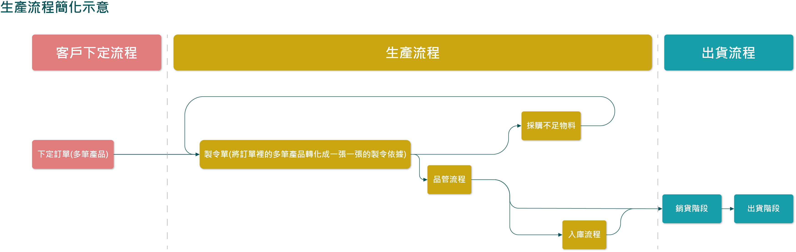
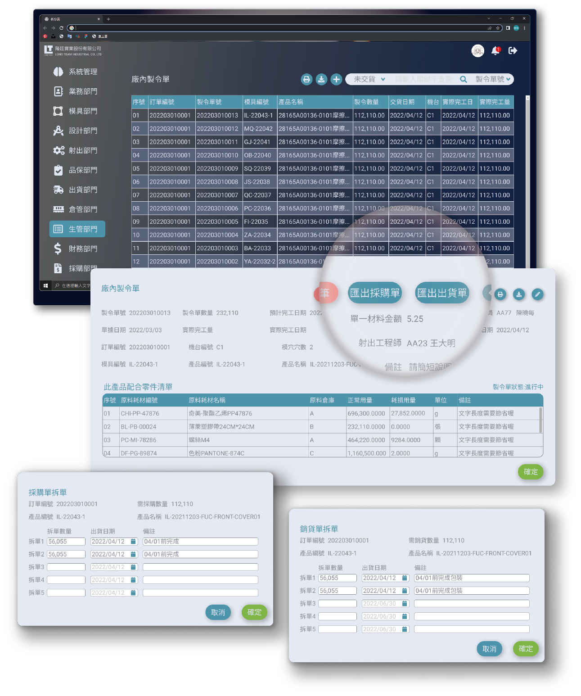

Traditional industries go digital.
We're improving production based on what customers need most, Management feedback: Issues include machine idle time, unclear production line status, material waste, lack of material data system,
and uneven manpower allocation caused by unclear machine conditions.
As there are various ERP systems available in the market for different industries to use, the system has good features but lacks flexibility. Additionally, due to a shortage of staff, one department needs to handle the business of two to three departments,
making it difficult to distinguish and manage their scope of work, moreover, the current ERP interface is cluttered, and novice users are often overwhelmed by its complex structure and complicated operation process.
We are improving the production process and making the machines on the production line more visible to solve the problems of complicated operations and unclear machine status.
Our partners
Based on the opinions of the production management department and the on-site injection engineers, the requirements and information are categorized into machine information,
order information, production status, and machine monitoring time.

Basic system services and scope framework
We will connect the machine operation status to our system, allowing managers to have real-time access to the current status of all machines in the factory.
We are optimizing and designing the production management process. Firstly, we are creating four main data categories: 1. customer information, 2. supplier information, 3. product information, 4. material consumption information.
These four types of data form the foundation of the system, and all operational processes will retrieve information from them.
In terms of the process, we will start with the "Order Creation" phase, which includes Order Creation → Inventory Inquiry → Export of Production Orders. These are the parts of the project that we will work on.。

Three key points of system optimization.
Simplify unnecessary functions
01.ERP has many functions, not all used.
02.Designed based on customer habits.
03.Simplify operations.
No material system currently
01.No material system purchased.
02.Warehouse inventory managed in Excel.
03.Material info is independent of system.
No machine information
01.System manages production.
02.Connects production and machines.
03.Visualize machine production info.
Currently, we establish customer data, vendor data, product data, and material data. In the future, the order process and production process will be linked and extracted from the above data,
ensuring consistency throughout the entire production process.

Creation of four main databases
Vendor data, customer data, product data, and raw material data are the four essential foundations of the entire system process. For instance, in the order data, we need to record which customer and which products are involved. In the product data, we must note the required raw materials.
The raw material consumables data includes vendor contact information and transaction records.
Before commencing the production process, it is crucial to establish the above data to be used for future production management.

Creating Product Inventory Data
Users need to create detailed information for each product, such as customer names and required materials, so that any documents in the future production process can retrieve this information.
Creating product Data
01.Product's customer affiliation.
02.Verify inventory for established products.
03.Note injection conditions and mold info.
Record product information
01.Record all materials, shipping packaging.
02.Keep track of material consumption ratio.
03.Can requisition materials based on data.
Search and import from database
01.Import materials from the database.
02.Add materials to database if not available.
03.Categorize materials by type.
The Process of Manufacturing Orders
Manufacturing orders are vital for production operations. The production line follows these orders to carry out manufacturing tasks.
There are two main types of manufacturing orders: those exported from orders and those manually created.

Manufacturing Order Status
01.In progress, suspended, completed.
02.No deletions, only suspensions.
03.Purpose: Data traceability.
Product traceability
01.Production follows manufacturing orders.
02.Enter key name/number for product data.
03.Auto retrieve details from database.
Export Documents
01.Export purchase orders or sales orders.
02.Purchase or outsource as needed.
03.Ship if enough inventory.
Industries' information cloudification is a long and ongoing journey!
The main challenge in Taiwan is "lack of orders." People hope the anti-China trend will bring more orders, but companies are focusing on Southeast Asia for development.
Is digital transformation just a trend, or can it revive traditional industries?
We're connecting machines and systems on the production line to improve transparency. The goal is to identify inefficiencies and streamline processes through ERP optimization.
Our ultimate aim is complete information and machine integration.